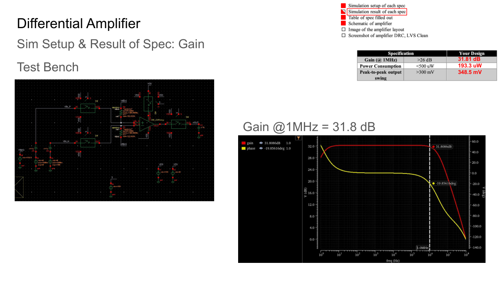
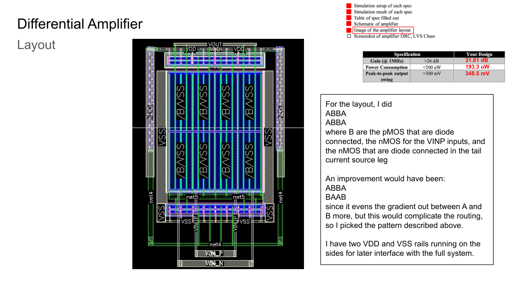

CMOS Differential Amplifier Tapeout
MIT 6.208 · March–May 2026 · Cadence
I designed a CMOS differential amplifier, explored its gain–power–swing tradeoffs in schematic simulation, and completed layout for fabrication as part of an integrated circuit design project.
Results and current status
| Amplifier metric | Schematic simulation |
|---|---|
| Gain at 1 MHz | 31.8 dB |
| Power consumption | 193 µW |
| Output swing | 348 mV peak-to-peak |
The final layout passed DRC and LVS, and the fabricated silicon has been received. Electrical testing is pending; these values are schematic-simulation results, not post-layout or measured-silicon results.
Bias and sizing decisions
I first adjusted the bias resistor to establish the tail current and inspect the DC operating points. I then swept transistor dimensions and bias settings to study how gain, power consumption, and output swing changed together.
A higher-gain setting reached about 34 dB in simulation, but I reduced the gain to retain the required output swing. The final amplifier achieved 31.8 dB at 1 MHz with more than 300 mV peak-to-peak swing. This made the tradeoff between small-signal gain and large-signal headroom concrete.

Layout decisions
I used multiple fingers and symmetric device placement, with an ABBA / ABBA arrangement described in my report. I considered an ABBA / BAAB alternative for improved gradient cancellation, but chose the former to simplify routing. Supply rails on both sides supported integration with the rest of the circuit.

Integration and unresolved issue
The full project also included a transmission gate and a digital code checker. I swept the code checker through all possible input combinations to check its logic and used transient simulation to evaluate propagation delay.
The integrated system had excessive off-state quiescent current in simulation. I did not complete that investigation before the project ended. The amplifier-block results above therefore do not establish that the entire integrated system met every specification.